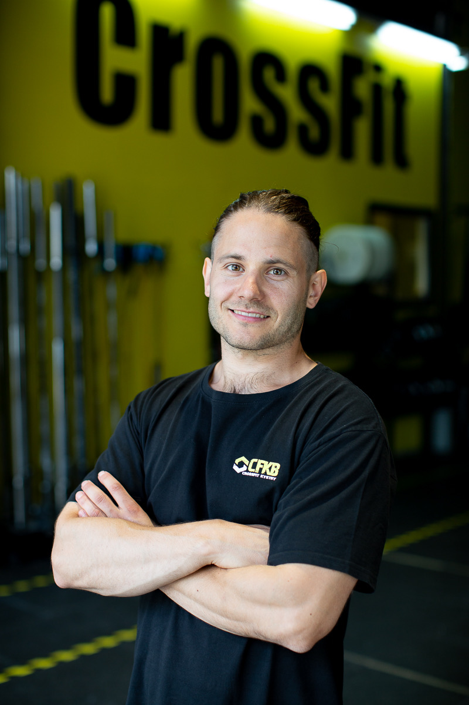
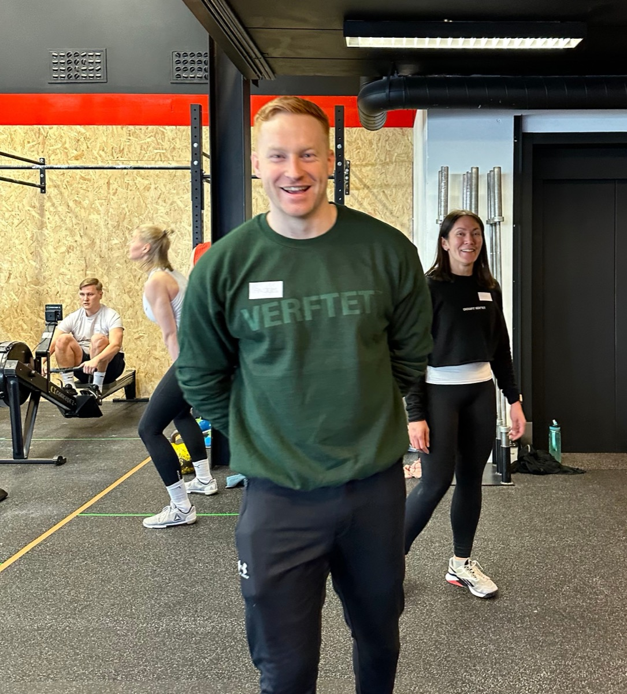
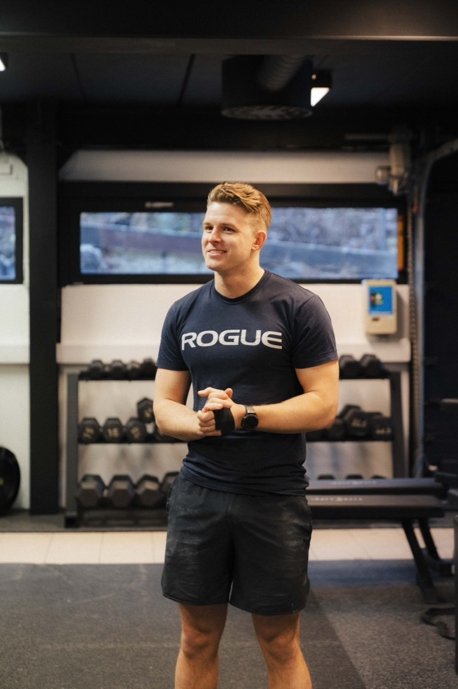
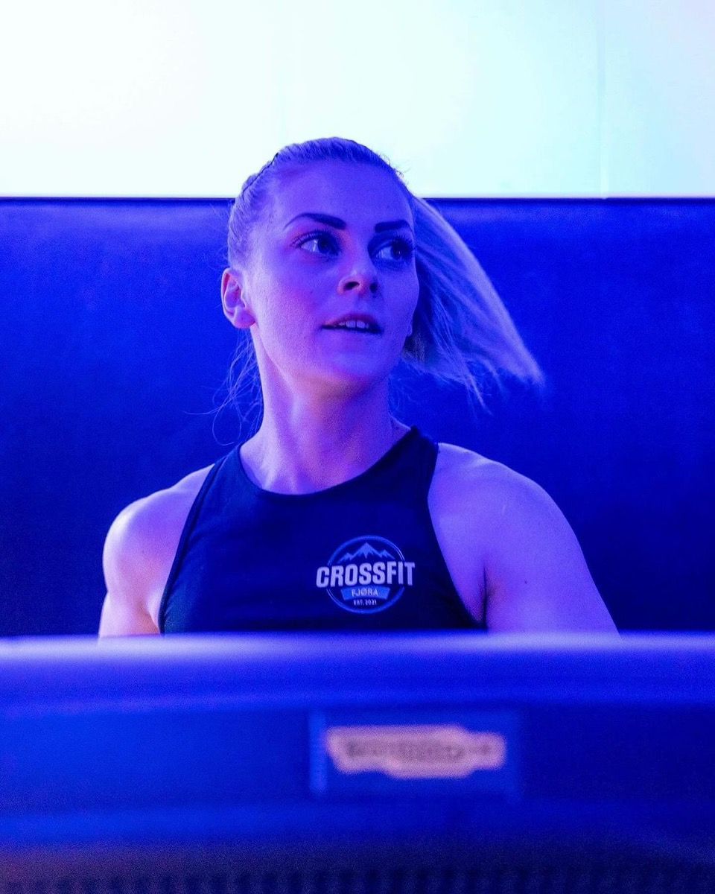
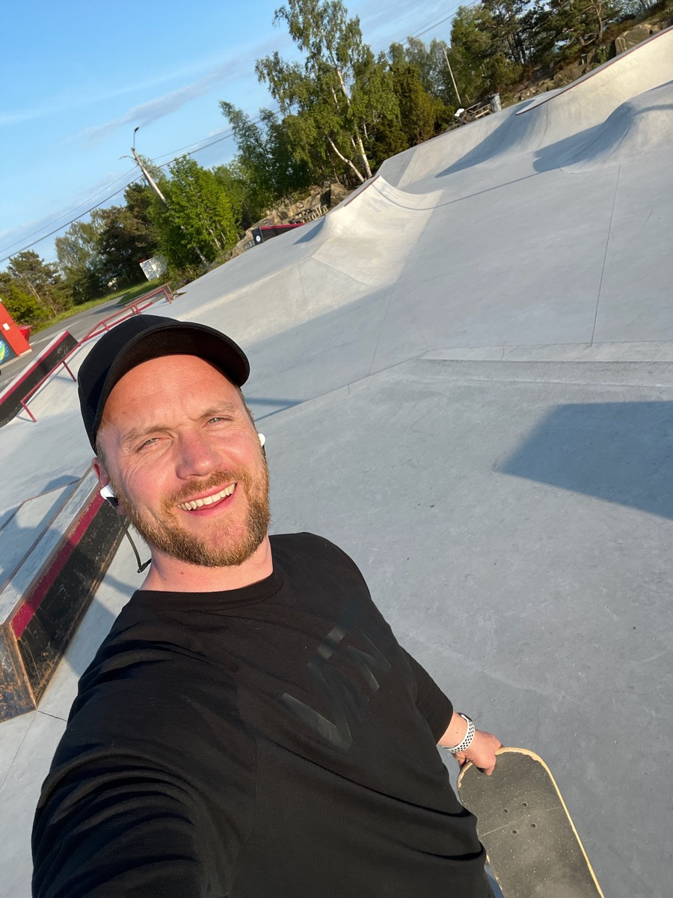

Vi er utrolig stolte av teamet vårt. Dedikerte mennesker som stråler av entusiasme, er med på gruppetimene og gir sitt aller beste hver eneste dag – for deg.

Daglig leder
Daglig leder & coach
Johnny Morlandstø
Johnny har et brennende engasjement for folkehelse og lang fartstid i treningsbransjen som PT, instruktør, ernæringsveileder og foredragsholder.
Med en bachelor i spesialisering av trenerroller og idrettspsykologi er fokuset hans å skape motivasjon og mestring i et inkluderende og lystbetont treningsmiljø.
Vilde brenner for å gjøre fysisk aktivitet til et enkelt valg i hverdagen, gjennom å skape mestring og bevegelsesglede for alle.
Med en master i folkehelse og helsefremmende arbeid, og allsidig erfaring med treningsledelse for ulike aldersgrupper, idretter og utgangspunkt, er hun godt rustet til å få alle til å elske CrossFit like mye som oss. Hun har selv trent CrossFit de siste fem årene, og gleder seg til å smitte treningsgleden over på deg.

Anders Matre
Coach
Anders er ekspert på å trylle frem det beste i andre ved å tilrettelegge treningen på en bærekraftig måte.
Med solid bakgrunn fra Forsvaret som befal og instruktør, og bred erfaring med lederutvikling, hjelper han deg å ta treningen til nye høyder. Han har mange års erfaring med CrossFit. Enten du er helt ny eller erfaren, sørger Anders for at du blir utfordret – og har det moro.

Anders Kyrkjeeide Karlsen
Coach & PT
Anders ble bitt av CrossFit-basillen for fem år siden. Gjennom trening og konkurranser har han selv erfart gleden av å mestre nye bevegelser med målrettet, systematisk trening.
Han har øye for detaljer og deler gjerne tips som gjør treningen mer effektiv og morsom. Med idrettslærerutdanning og erfaring fra skolen har han en pedagogisk tilnærming, og er ekspert på å tilrettelegge for alle nivåer.
«Å få muligheten til å veilede andre til å mestre nye ferdigheter gir meg enormt mye glede.»

Benedikte Gideonsen
Coach
Benedikte er en skikkelig CrossFit-nerd, og har til og med drevet sin egen CrossFit-boks i Sogndal.
Hun er lidenskapelig opptatt av å vise at CrossFit er for alle, med individuelle tilpasninger for hver enkelt. Med åtte år i CrossFit-gamet og solid utdanning og erfaring innen idrett, trening, helse og pedagogikk, vet hun hva som skal til for å skape magiske resultater.

Kristian Asphaug
Coach
Kristian er en kraftpakke av positivitet, engasjement og motivasjon, og brenner for å gjøre CrossFit og funksjonell trening tilgjengelig for alle.
Han har flere års erfaring med trening og coaching. Evnen hans til å se hver enkelt er unik, og han tar seg alltid tid til å lære deg det du trenger for å oppnå mestring og fremgang.
Maya Hauge
Coach
Maya har over ti års treningserfaring i sekken, med solid bakgrunn fra tung styrketrening. De siste årene har også hun blitt bitt av CrossFit-basillen.
Hun er kjent som den positive, smilende og imøtekommende treneren som ser hver enkelt og sørger for at alle får en god treningsopplevelse.
«Jeg elsker å holde timer og se hvordan medlemmene utvikler seg, og hvordan jeg selv utvikler meg som trener.»
Vil du bli en av oss?
Vi ser etter flere som brenner for trening og folk.